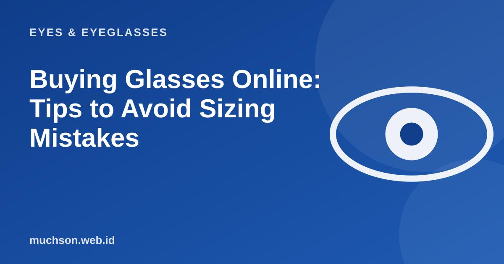

Home › Articles › Eyes & Eyeglasses
Eyes & EyeglassesBuying Glasses Online: Tips to Avoid Sizing Mistakes
Shopping for glasses online is convenient, but riskier than buying clothes: the wrong lens or frame size means glasses you cannot wear. A little preparation lowers the chance of a mistake.

Prepare three pieces of information first
Text description of the diagram
- A recent prescription: SPH, CYL, AXIS, ADD
- PD: distance between the pupils
- Frame size: lens width-bridge-temple
Check the shop before paying
When the parcel arrives
- Check the frame: not bent, no scratches, hinges move smoothly.
- Check the lenses: clean, not wavy, as ordered.
- Wear them and judge: are they comfortable, do they stay up, is your vision clear?
- If anything is wrong, take photos and contact the shop as soon as possible.
Remember
An old or incomplete prescription is the biggest reason online glasses feel wrong. If it is more than one to two years old, get your eyes checked first.
FAQ
Is it safe to buy progressive glasses online?
It is riskier because they need an accurate lens height and PD measurement. Have the measurements taken at an optical shop.
Can I buy just a frame and have lenses fitted elsewhere?
Yes, but make sure the frame suits your prescription and that the shop is willing to fit it. Ask before you buy.
What should I do if the glasses do not fit?
Contact the shop and use its adjustment or exchange policy. Have photos and your size details ready.